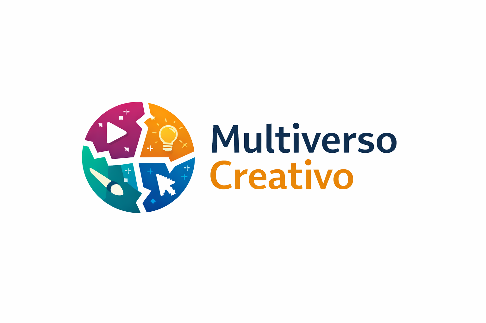

Diseño
El diseño como herramienta de comunicación visual, identidad gráfica y expresión creativa en entornos digitales.

Multiverso Creativo es un proyecto digital orientado a la difusión de contenido cultural, educativo y audiovisual para jóvenes interesados en el mundo creativo y las nuevas tecnologías.
Multiverso Creativo nace como una iniciativa que integra diferentes disciplinas creativas en una sola plataforma digital. Nuestro objetivo es compartir conocimiento, inspiración y contenido relevante para estudiantes, creadores y amantes del arte digital.
El diseño como herramienta de comunicación visual, identidad gráfica y expresión creativa en entornos digitales.
La música como lenguaje universal y medio de expresión cultural dentro de plataformas digitales.
Ilustración, animación y contenido visual adaptado a nuevas tecnologías y formatos multimedia.
Uso de herramientas tecnológicas aplicadas a la creación y difusión de contenido creativo.
Para más información sobre Multiverso Creativo o para formar parte del proyecto, puedes comunicarte a través de nuestras plataformas digitales.